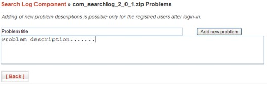
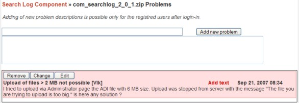

Purpose
JotLoader allows to present files exposed on the Joomla site for download in well-arranged layout. Download files can be grouped in categories with own description and customized layout. To each download file can be assigned Bug Tracker listing with the possibility for registred users to add new problem descriptions and comments. Site administrator can edit/add/delete any text message as well as change the problem status (pending/closed) from site front-end.
Front-end
Each download category is displayed in the front-end as compact table with category title, description and all released files each with the description as well.
Pressing the Download button allows in the standart manner to download the chosen file.
Adding of new problem descriptions is possible only for the registred users after login-in :
After adding the new problem we can see problem title and description in the Bug Tracker table (in pink color marking pending problem). Registred users can add remarks to problem definition via "Add text" link.
Administrator has more possibilities - Remove (problem from Bug Tracker table), Change (problem status) and Edit (any text) buttons.